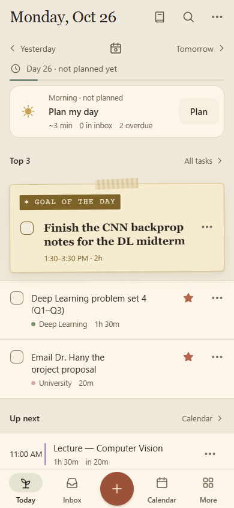
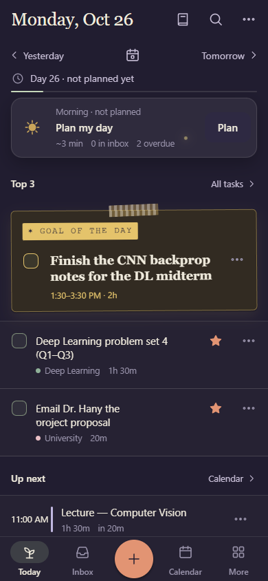
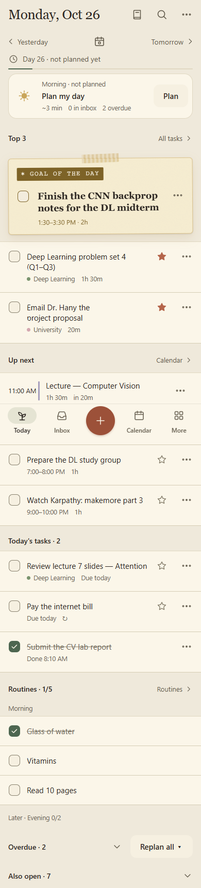
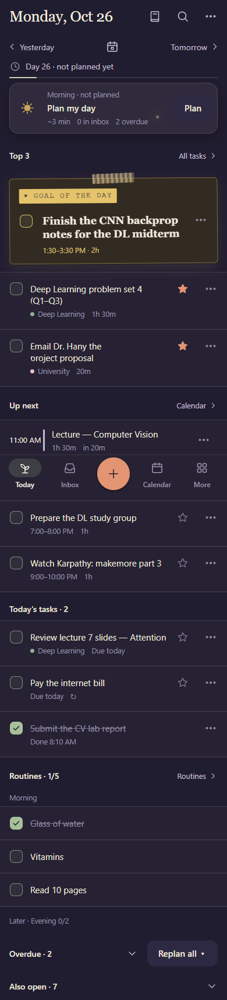

Three directions for the first screen of the phone app, each with a matching family of Android home-screen widgets. They're drawn on the same day (lectures, Deep Learning study, the gym, the goal of the day), on a 360, a 390 and a 430 wide phone, and the widgets sit on a real-looking home screen. Use the toggle for day and night (the widgets follow the phone's dark mode). Every direction keeps the paper goal card (smaller), the Yesterday / Tomorrow day stepper, Today's tasks apart from Also open, and the morning and evening rituals. The colours are the app's own, with the calendar's palette C for the blocks. Answer with letters, for example "phone B, widgets B, lock B". The desktop version is in Today options.html.
The same day in the app now (mock data, 10:40 AM, 390 wide). Above the fold: the date bar (50 px), the Yesterday · 📅 · Tomorrow strip and its "Day 26 · not planned yet" line (86 px), the Plan my day card (87 px), the "Top 3" heading, and the goal card (147 px; 171 px at 360). Then come Top 3 rows that are 78 to 98 px tall (the title wraps over a second meta line), and the tab bar (66 px, with the + in the middle). 3 tasks are fully on screen at 360, 390 and 430 alike. Today's tasks starts about 1000 px down, and the whole page is 2.4 screens long at 360, 2.1 at 390 and 1.9 at 430.




What an app like ours can actually put there (research, 26 Oct 2026; the sources are in the handoff):
All 32 widgets in the app's picker today, as they draw now (the picker previews come from the app's own widget gallery; night versions are in docs/log/assets/widgets/family-*.jpg). Nothing is cut (Kai, 26 Oct). Each one is marked redo (the layout changes), restyle (same content, in the new family style) or merge (a true duplicate becomes one entry that resizes), with a reason. Every one has its modern version next to it, in one family style led by B, Now + next: the paper card at the system corner radius, a line icon with a sentence-case label, palette C blocks, the Now card's ring, progress line and times, the straight paper goal strip, a terra pill for the main action, and the app's own drawings. This is the spec for the real widgets. Use Agree or Not this on each one. Your answers go into "Copy my picks".
system_app_widget_background_radius, about 16–28 dp depending on the launcher). Our layouts should use @android:id/background and the matching inner radius, instead of the fixed 22 dp they draw now.system_accent and system_neutral palettes, could tint a widget to match the wallpaper. These designs keep the app's own paper and ink instead: an opaque card with AA text reads on any wallpaper, light or dark. Night Garden comes from values-night, so the widgets follow the phone's dark mode (they already do).updatePeriodMillis can't go below 30 minutes. Ours redraw when the app pushes a new snapshot, every 30 minutes, and with one inexact alarm when something changes (a block starts or ends, midnight). A per-minute "in 20m" goes stale between updates, so a widget shows clock times ("11:00") or uses a Chronometer, which counts down by itself.setOnCheckedChangeResponse, ticks at once without opening the app. Before 12 it's an image with a PendingIntent broadcast. That's how ours work today (WidgetActions TICK: drawn at once, then the app applies it the next time it runs).targetCellWidth and targetCellHeight (Android 12+), the min and max resize sizes, and size-mapped RemoteViews let one widget change its face as it's resized (small, then medium, then large). Ours pick the face from the size the launcher reports. Lists that scroll need a collection view. The current widgets draw a fixed number of rows, and so do these.previewLayout instead of a picture.